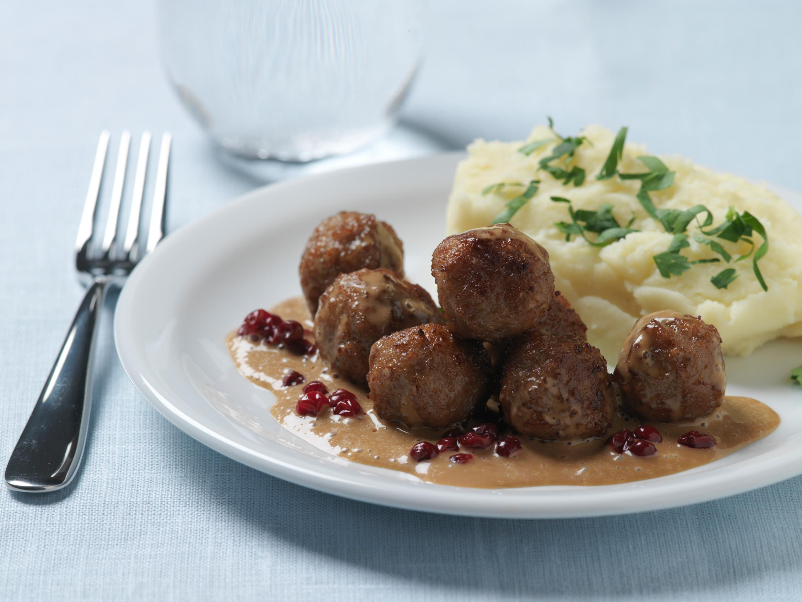

Meatballs

Description
Swedish classic number one! We all love meatballs and they go with everything from dinner to appetizers!
Easy to vary with spices and different accessories. Favorite recipe!
Ingredients
- 1.5 dl Milk
- 5 Tbsp breadcrumbs
- 500 g groundbeef
- 1/2 onion
- 1 Egg
- Salt and pepper
Instructions
-
Mix milk and breadcrumbs. Let swell for 10 minutes. Add minced meat, onion, egg, salt, pepper and sugar to the breadcrumb mixture.
Work the minced meat together properly.
-
Moisten your hands with cold water and form meatballs. Fry a few at a time in cooking fat,
shaking the pan from time to time so that the meatballs roll around and stay round.
- Suggestions: Serve the meatballs with boiled potatoes or mashed potatoes, lingonberry jam and gherkins.